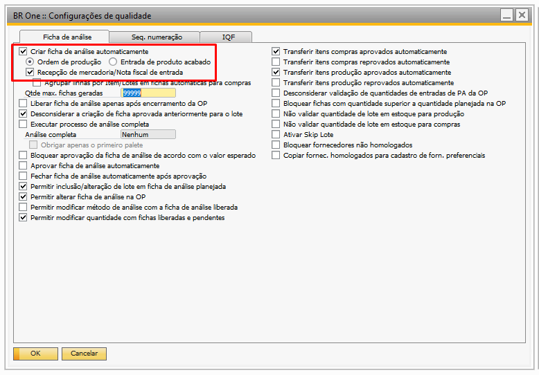
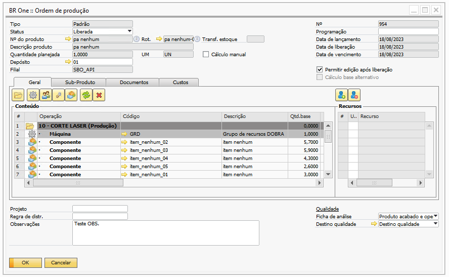
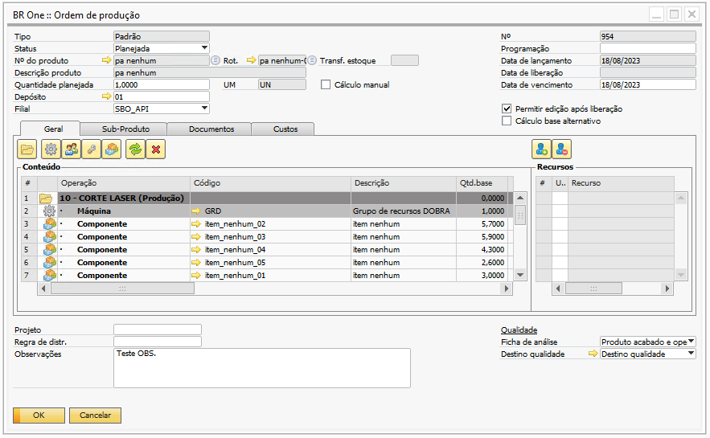
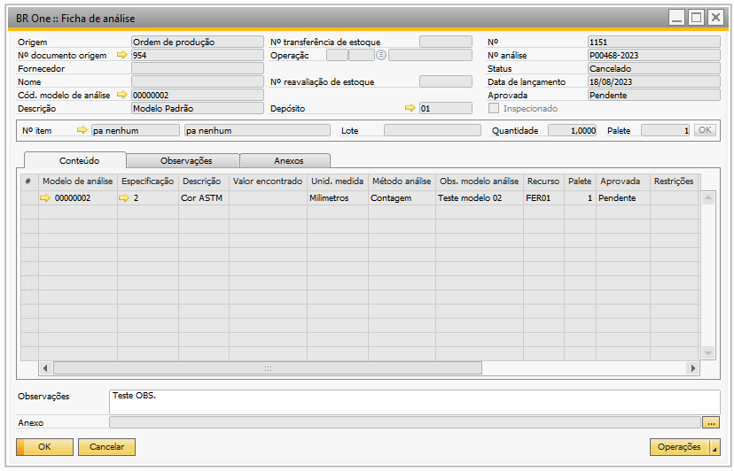
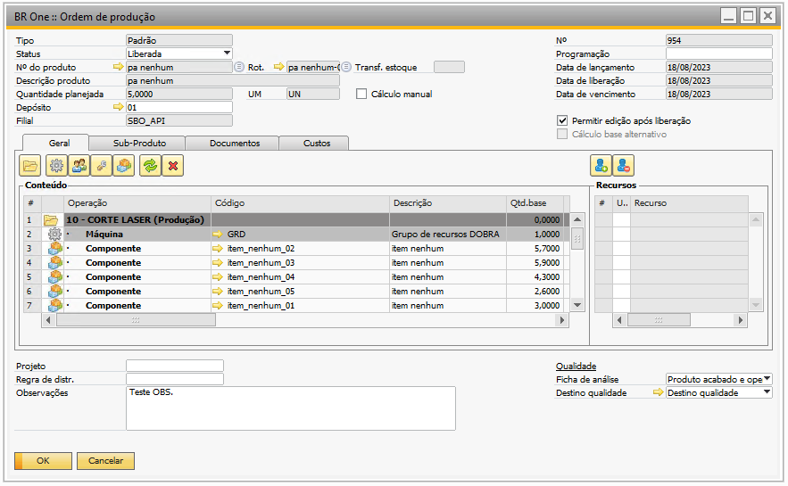
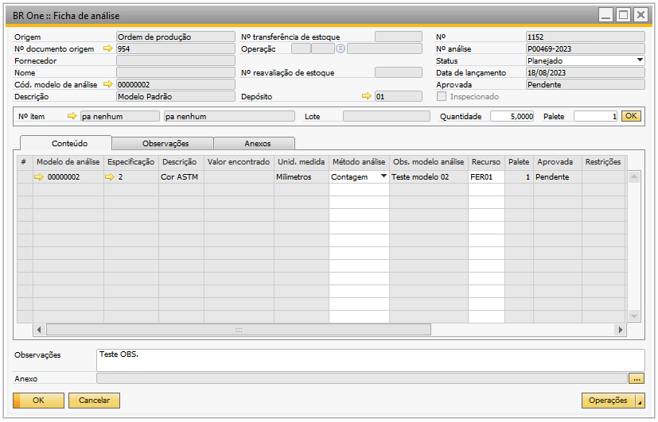

Cancelamento do documento de origem da ficha de análise - Produção
O cancelamento automático da ‘Ficha de análise’, ocorre quando o documento base que originou a ficha é cancelado, assim, o ad-don realiza todas as validações e cancela a ficha de análise e todos os documentos originados a partir dela.
Afim de ilustração, segue abaixo exemplo do comportamento do ad-don, no cancelamento automático da ficha de análise com origem de documento de produção, levando em consideração as configurações de qualidade abaixo, temos:
{kind=link}
Exemplo: Ficha de análise gerada através de documento de produção
Foi adicionada a ‘Ordem de produção’ de nº 954, a mesma possui o item pa nenhum que por sua vez possui um modelo de análise, com isso na liberação da OP (conforme configuração de qualidade), o ad-don criou automaticamente a ficha de análise nº 1151, que possui o status ‘Planejado’.
{kind=link}
{kind=link}
Ao liberar a ‘Ordem de produção’, o usuário identificou que a quantidade planejada informada no OP está incorreta, por tanto para realizar a correção desta quantidade, será necessário voltar o status da OP para ‘Planejado’, ao realizar esse processo o ad-don irá realizar o cancelamento da ficha de análise de nª 1151.
 {kind=link}
{kind=link}
Ainda seguindo nosso exemplo, o usuário atualizou a quantidade planejada da OP de 1 unidade para 5 unidades, e realizou a liberação da OP novamente, como o ad-don realizou o cancelamento da ficha de análise anterior, e o PA da OP ainda possui o modelo de análise configurado, o BR One irá gerar novamente uma ficha de análise para a OP 954.
 {kind=link}
{kind=link}
O comportamento acima é semelhante para o cancelamento automático de todas as fichas de análise geradas automaticamente para qualquer tipo de OP.
Quanto as fichas de análise geradas através das entradas de PA, o ad-don também realiza automaticamente o cancelamento das fichas de análises vinculados as entradas de PA quando a mesma é estornada através da tela de ‘Estorno de produção’.